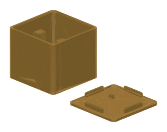

Roon
Control your zone, playback and volume directly through Roon Server. Choose playlists and My Live Radio stations from lists. Configure everything in the extension’s settings gear.
How to set it up →A Philips Hue Tap Dial. A tiny ESP32-C6. Your favourite music in Roon, BluOS or WiiM – controlled by a real dial and four configurable buttons.

01
One mode is active at a time. Settings for the other modes stay saved.
Control your zone, playback and volume directly through Roon Server. Choose playlists and My Live Radio stations from lists. Configure everything in the extension’s settings gear.
How to set it up →Control Bluesound, NAD and other BluOS players directly over your home network. Discover your player, select its saved presets and assign short and long button actions.
How to set it up →Control WiiM directly through its local API. Use presets saved in WiiM Home. Assign playback, previous/next and optional native WiiM volume to the dial.
How to set it up →No extra computer. The firmware runs on the ESP. No Hue Bridge, Raspberry Pi, Docker, MQTT or always-on PC is needed. Roon mode still requires Roon Server.
A controller, not an audio player. The ESP does not stream music, act as a Roon audio endpoint or replace your player or DAC. A Tap Dial belongs to one Zigbee network at a time.
02
A dial, an ESP and your existing audio system are all you need.

03
Initial setup runs directly over USB in your browser. No setup Wi-Fi network or 192.168.4.1 address is involved.
Open Chrome or Edge, connect the ESP with a USB data cable and select it in the installer.
Close the installer dialog. Set up as new or immediately restore a backup from the same ESP.
Select your 2.4 GHz Wi-Fi. For Roon, also choose your server and approve the extension.
Open web configuration, pair the Tap Dial and configure Roon, BluOS or WiiM with your chosen actions.
04
Four buttons, short and long actions and your own dial response. Each mode keeps its own profile.
Enable the extension, select a zone and assign the buttons. Choose a language independently of Roon. The Tap Dial battery reading appears in the extension status after its first report.
Read the complete instructions →Select a player discovered on your network or enter its address. Choose its saved presets, button actions, sensitivity and volume steps in dB.
Read the complete instructions →Find your WiiM, choose presets from WiiM Home and assign buttons. Direct WiiM volume is a separate option, initially disabled in a new profile.
Read the complete instructions →05
The printable enclosure designs are provided as STL files.

Design drafts: check fit and print settings on your own printer. Choose standard or short feet. Slice the STL files yourself; no printer-specific G-code is distributed.
06
The complete guide also covers first pairing, backups and troubleshooting.
No. The ESP is the Zigbee coordinator. DialCaptain works independently. RoonPilot and an RME Bridge may complement your Roon system, but are not required.
All three profiles stay saved. Saving activates the new mode. Your Roon zone, authorization, favourites and separate BluOS/WiiM mappings are not erased by switching.
Roon: 1–4 native Roon steps per click; the chosen output determines the unit. BluOS: 0.5 / 1 / 2 dB. WiiM: optional 1 / 2 / 5 percentage points. Sensitivity and step size are separate settings.
Yes. File export includes settings and the stored Tap Dial/Zigbee association for the same ESP. The file includes credentials and is saved on your computer.
Roon, BluOS and WiiM are implemented; basic control and several device flows have been tested. Complete first pairing of a new Tap Dial and restoration after a real factory flash still need separate hardware acceptance. Eversolo and an OTA updater are not implemented.